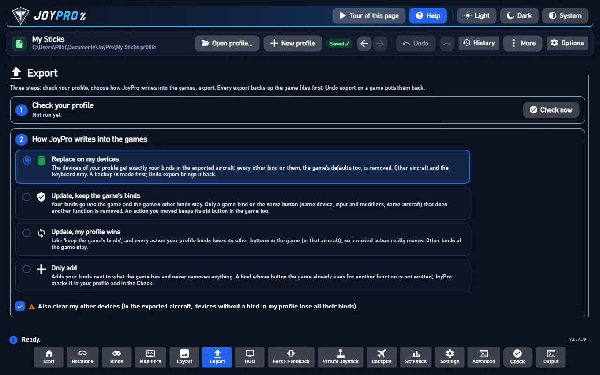

Το MSFS 2020 κρατά ένα προφίλ χειρισμών ανά συσκευή, που χρησιμοποιείται για κάθε αεροσκάφος. Στην έκδοση Steam κάθε προφίλ είναι ένα μικρό αρχείο XML στον φάκελο remote του εξομοιωτή στο Steam· το JoyPro διαβάζει αυτά τα αρχεία στο προφίλ σας και γράφει τις αντιστοιχίσεις σας πίσω σε αυτά, επί τόπου. Τα προφίλ της έκδοσης Microsoft Store εισάγονται, δεν γράφονται. Σε αντίθεση με το MSFS 2024 δεν υπάρχει πακέτο προρυθμίσεων, αρχείο εισαγωγής ή προφίλ ανά αεροσκάφος.
Microsoft Flight Simulator 2020 εγγενής (δικά του αρχεία αντιστοιχίσεων)
- Υποστήριξη
- εγγενής (δικά του αρχεία αντιστοιχίσεων)
- Εντολή μηχανής
engine msfs2020- Αρχείο αντιστοιχίσεων
- Steam
userdata\<id>\1250410\remote\inputprofile_*(τμήμα XML ανά συσκευή) - Είσοδοι που διαβάζει το παιχνίδι
- διαβάζει 8 άξονες, 1 Hat (4 κατευθύνσεις) ανά joystick (τεκμηριωμένο)
- Λίστα εντολών από
- όπως το MSFS 2024
- Δοκιμή μέσα στο παιχνίδι
- 41/41 βήματα επιτυχή (2026-10-10)
- ✓ Εισαγωγή
- ✓ Εξαγωγή
- ✗ Αντιστοιχίσεις πληκτρολογίου
- ◐ ΤροποποιητέςMSFS: μόνο κουμπιά τροποποιητή της ίδιας συσκευής.
- ✓ Λίστα εντολών που δημιουργείται στον υπολογιστή σας
- ✓ Παρακολούθηση παιχνιδιών
- ✓ Καμπύλες αξόνων και νεκρές ζώνες
- ✗ Ρυθμίσεις χειρισμού του παιχνιδιού
- ✗ Ρυθμίσεις ανάδρασης δύναμης στο παιχνίδι
- ✗ Ανάδραση δύναμης από τηλεμετρία
- ✓ Καταγραφή τηλεμετρίας
- ✓ Εικονικό joystick (vJoy)
- ◐ Εικονικό χειριστήριο Xbox
- ✓ Εικονικές λειτουργίες
- ✓ Οδηγός ρύθμισης / Αυτόματη ανάθεση
- ✓ Πιλοτήρια
- ✓ Φύλλα αναφοράς
- ✓ Δοκιμή μέσα στο παιχνίδι
Από τον πίνακα υποστήριξης, που δημιουργείται από τον κώδικα της μηχανής: όλα τα παιχνίδια.
#Λειτουργία σε 3 βήματα
- Ρύθμισέ τα όλα για μένα
στην Αρχική - Χρήση αυτών των κουμπιών
δείτε πρώτα τη λίστα - Εγγραφή στο παιχνίδι μου
με τον εξομοιωτή κλειστό
Πριν: φτιάξτε μία φορά ένα προφίλ για κάθε συσκευή στον εξομοιωτή (Settings > Controls). Το JoyPro γράφει μόνο την έκδοση Steam· η έκδοση Microsoft Store μπορεί μόνο να εισαχθεί.
Μετά: ξεκινήστε τον εξομοιωτή. Οι αντιστοιχίσεις σας βρίσκονται στο Settings > Controls, σε κάθε αεροσκάφος.
Έχετε αντιστοιχίσει κουμπιά στο MSFS 2020 στο παρελθόν; Τότε η Αρχική προσφέρει Εισαγωγή, μετά συμπλήρωση κενών. Οι αντιστοιχίσεις σας μένουν και μόνο τα ελεύθερα κουμπιά παίρνουν νέες δουλειές. Δείτε Γρήγορη έναρξη: να λειτουργήσει το stick μου.
#Τι κάνει το JoyPro για το MSFS 2020
- Εισαγωγή: το προφίλ κάθε συνδεδεμένης συσκευής (Steam ή Microsoft Store) έρχεται στο προφίλ σας: αντιστοιχίσεις πτήσης, αντιστοιχίσεις General (κάμερες, όψεις, παύση) και οι ρυθμίσεις αξόνων της σελίδας Sensitivity.
- Σχέσεις: μία σχέση είναι μία λειτουργία. Μια σχέση ισχύει για κάθε αεροσκάφος, επειδή το MSFS 2020 έχει ένα προφίλ ανά συσκευή.
- Εξαγωγή: το JoyPro επεξεργάζεται τα προφίλ συσκευών στον φάκελο
remoteτης έκδοσης Steam. Ο εξομοιωτής τα διαβάζει στην επόμενη εκκίνησή του.
#Εισαγωγή των αντιστοιχίσεων του MSFS 2020
- Ανοίξτε την Αρχική και πατήστε Εισαγωγή στην κάρτα του Microsoft Flight Simulator 2020.
- Εισαγωγή και συσκευών που δεν είναι συνδεδεμένες (ανενεργό): το MSFS κρατά τα προφίλ κάθε συσκευής που έχει δει ποτέ· ανενεργό σημαίνει μόνο οι συσκευές που είναι συνδεδεμένες τώρα. Το Εισαγωγή και των εργοστασιακών προεπιλογών που ίσως δεν χρησιμοποιεί ο προσομοιωτής (ανενεργό) προσθέτει την προρύθμιση που φέρνει ο εξομοιωτής για μια συσκευή χωρίς δικό της προφίλ, ακόμα και όταν δεν είναι γνωστό αν ο εξομοιωτής τη χρησιμοποιεί.
- Πατήστε Εισαγωγή τώρα ή Πρώτα προβολή για να δείτε τι έχει ο εξομοιωτής χωρίς να αλλάξει το προφίλ σας.
#Δημιουργία και έλεγχος σχέσεων
Δημιουργήστε σχέσεις στη σελίδα Σχέσεις όπως για κάθε παιχνίδι (δείτε τη ροή σχέσεων) και μετά εκτελέστε τον Έλεγχο στη σελίδα «Εξαγωγή». Ο Έλεγχος δεν αναφέρει εδώ ως σφάλμα τη μανέτα ενός αεροπλάνου και το collective ενός ελικοπτέρου στον ίδιο άξονα: το MSFS 2020 δεν έχει ξεχωριστές λίστες αεροσκαφών.
#Εξαγωγή στο MSFS 2020
- Κλείστε το MSFS 2020. Το JoyPro αρνείται να γράψει όσο τρέχει ο εξομοιωτής.
- Ανοίξτε την Εξαγωγή, κρατήστε το Αντικατάσταση στις συσκευές μου μαζί με το Καθαρισμός και των άλλων συσκευών μου, αν ρυθμίζετε τις συσκευές σας στο JoyPro, και πατήστε Εξαγωγή τώρα στην κάρτα του MSFS 2020.
- Ξεκινήστε τον εξομοιωτή. Ο φάκελος
remoteείναι φάκελος του Steam Cloud, οπότε το Steam συγχρονίζει τα αρχεία που άλλαξαν.



Ανοίξτε το Settings > Controls και επιλέξτε τη συσκευή σας: οι αντιστοιχίσεις σας βρίσκονται στο προφίλ της συσκευής κάτω από τα ονόματα ενεργειών του εξομοιωτή, και η σελίδα Sensitivity της συσκευής δείχνει τις καμπύλες αξόνων που έγραψε το JoyPro. Το ίδιο προφίλ χρησιμοποιείται σε κάθε αεροσκάφος.
#Τι κάνετε μόνοι σας στο MSFS 2020
- Φτιάξτε μία φορά ένα προφίλ για κάθε συσκευή στον εξομοιωτή (Settings > Controls). Το JoyPro επεξεργάζεται μόνο υπάρχοντα προφίλ· για μια συσκευή χωρίς προφίλ η εξαγωγή γράφει «δημιουργήστε πρώτα ένα στον εξομοιωτή».
- Έκδοση Microsoft Store: το JoyPro εισάγει τα προφίλ σας αλλά δεν μπορεί να τα γράψει. Χρησιμοποιήστε την έκδοση Steam για την εξαγωγή ή ορίστε τις αντιστοιχίσεις στον εξομοιωτή.
- Σχέσεις περιορισμένες σε αεροσκάφη: το MSFS 2020 δεν μπορεί να τις κρατήσει χωριστά. Στη φόρμα Άλλα παιχνίδια της Αρχικής, το Αεροσκάφος εξαγωγής εξάγει και τις σχέσεις που είναι περιορισμένες σε ένα αεροσκάφος, για κάθε αεροσκάφος.
#Συνηθισμένες παγίδες
- «Το MSFS 2020 τρέχει»: κλείστε τον εξομοιωτή και κάντε ξανά εξαγωγή.
- Ο εξομοιωτής δείχνει τις παλιές σας αντιστοιχίσεις: το Steam Cloud επανέφερε ένα παλαιότερο αντίγραφο. Κλείστε τον εξομοιωτή και κάντε ξανά εξαγωγή.
- Μια συσκευή έχει πολλά προφίλ: το JoyPro χρησιμοποιεί αυτό που επιλέχθηκε με το Προφίλ παιχνιδιού στη φόρμα Άλλα παιχνίδια, ή το μοναδικό· αλλιώς η συσκευή παραλείπεται με προειδοποίηση που αναφέρει τα ονόματα.
- Λείπει μια αντιστοίχιση: μια ενέργεια κρατά το πολύ δύο συνδυασμούς εισόδων (Primary και Secondary)· ένας τρίτος αναφέρεται και παραλείπεται.
#Αρχεία που διαβάζει και γράφει το JoyPro
| Αρχείο | Τι είναι |
|---|---|
<Steam>\userdata\<id>\1250410\remote\inputprofile_<n> |
ένα προφίλ συσκευής, XML χωρίς επέκταση· γράφεται επί τόπου (πρώτα αντίγραφο ασφαλείας .jpbak) |
<Steam>\userdata\<id>\1250410\remote\profile_00 |
το δυαδικό ευρετήριο του προσομοιωτή για τα προφίλ συσκευών: μόνο ανάγνωση, δεν γράφεται ποτέ |
%LOCALAPPDATA%\Packages\Microsoft.FlightSimulator_8wekyb3d8bbwe\SystemAppData\wgs\<user>\ |
η αποθήκευση του Microsoft Store: μόνο ανάγνωση (εισαγωγή και σάρωση) |
<install>\Input\*.xml, το fs-base\en-US.locPak |
οι προρυθμίσεις που φέρνει ο προσομοιωτής και τα ονόματα μενού του: μόνο ανάγνωση |
%LOCALAPPDATA%\JoyPro2\Ownership\MSFS, ...\Backups\MSFS |
τα δεδομένα ιδιοκτησίας και τα αντίγραφα ασφαλείας του JoyPro, ποτέ στον φάκελο του Steam |
Ο φάκελος remote του Steam είναι φάκελος Steam Cloud. Επεξεργάζονται μόνο τα υπάρχοντα αρχεία inputprofile_*: το profile_00 του προσομοιωτή ονομάζει συγκεκριμένα αρχεία, οπότε ένα νέο αρχείο δεν θα αναγνωριζόταν.
#Οι λειτουργίες εξαγωγής στο MSFS 2020
| Λειτουργία | Τι συμβαίνει στα προφίλ συσκευών |
|---|---|
| Μόνο προσθήκη | Μια αντιστοίχιση γράφεται μόνο εκεί όπου το προφίλ δεν έχει άλλη ενέργεια στον ίδιο συνδυασμό εισόδων· αλλιώς αναφέρεται στο "Binds Not Written, Button Taken In The Game". Δεν αφαιρείται τίποτα. |
| Ενημέρωση, διατήρηση των αντιστοιχίσεων του παιχνιδιού | Η άλλη ενέργεια στον συνδυασμό σας τον χάνει· όλα τα άλλα μένουν, και ο παλιός συνδυασμός μιας ενέργειας. |
| Ενημέρωση, υπερισχύει το προφίλ μου | Όπως παραπάνω, και κάθε ενέργεια που αντιστοιχίζετε χάνει τους άλλους συνδυασμούς της στα προφίλ των συνδεδεμένων συσκευών. |
| Αντικατάσταση στις συσκευές μου | Τα προφίλ των συνδεδεμένων συσκευών που αντιστοιχίζει το JoyPro κρατούν μόνο τις αντιστοιχίσεις σας. |
| + Καθαρισμός και των άλλων συσκευών μου | Τα προφίλ των συνδεδεμένων συσκευών χωρίς αντιστοίχιση στο προφίλ σας καθαρίζονται. |
#Τι δεν αγγίζεται ποτέ
- Τα περιβάλλοντα μενού, παγκόσμιου χάρτη και προγραμματιστή (
MENU,MENU_*,WORLDMAP_*,DEBUG,DEVMODE*,EDITOR_*,MISSION_FLOW_TOOLS), σε κάθε λειτουργία. - Τα προφίλ πληκτρολογίου, ποντικιού και gamepad (
GUID="{0}"): οι αντιστοιχίσεις πληκτρολογίου δεν γράφονται στο MSFS. - Τα προφίλ συσκευών που δεν είναι συνδεδεμένες, το
profile_00, η αποθήκευση του Store, οι συσκευές που αγνοεί η εισαγωγή και η συσκευή vJoy στην οποία προωθεί το JoyPro.
#Καμπύλες και τα υπόλοιπα
- Λεπτομέρεια: ένα προφίλ ανά συσκευή, για κάθε αεροσκάφος.
- Καμπύλες αξόνων: η σελίδα Sensitivity της συσκευής, ένα σύνολο ανά φυσικό άξονα: Sensitivity + και -, Neutral, Dead zone, Extremity dead zone, Reactivity, η σημαία χωρίς καμπύλη και η αντιστροφή. Το MSFS 2020 δεν έχει παράκαμψη ανά ενέργεια: μια σχέση που ζητά μία παίρνει τη σελίδα της συσκευής και μια προειδοποίηση. Η προεπισκόπηση καμπύλης ταιριάζει με τον προσομοιωτή (μετρημένη στο MSFS 2020). Το εύρος ρύθμισης
family:msfsκαλύπτει και τους δύο προσομοιωτές· δείτε axis-curves. - Ανάδραση δύναμης: το MSFS δεν έχει δική του.
- Καταγραφή τηλεμετρίας: μέσω SimConnect, μόνο ανάγνωση, με το
SimConnect.dllστον φάκελο εγκατάστασης του προσομοιωτή (ή αυτό του MSFS SDK· το JoyPro δεν συνοδεύεται από κανένα). - HUD: το HUD βρίσκει τον προσομοιωτή από τη διεργασία του (
FlightSimulator) και δείχνει τις αντιστοιχίσεις του. - Παρακολούθηση: το JoyPro παρακολουθεί τα αρχεία
inputprofile_*και τοcontainers.indexτης αποθήκευσης του Store και ρωτά αφού κλείσει ο προσομοιωτής (η παρακολούθηση).
#Τι διαφέρει από το MSFS 2024
| MSFS 2020 | MSFS 2024 | |
|---|---|---|
| Προορισμός εξαγωγής | τα προφίλ του Steam επί τόπου | τα δικά σας προφίλ (Steam και Store), το πακέτο προρυθμίσεων του JoyPro, αρχεία εισαγωγής |
| Έκδοση Microsoft Store | μόνο εισαγωγή | εισαγωγή και εγγραφή |
| Προφίλ | ένα ανά συσκευή | ανά συσκευή και κατηγορία, επιλεγμένο ανά αεροσκάφος |
| Σχέσεις περιορισμένες σε αεροσκάφη | μόνο με το Αεροσκάφος εξαγωγής (τότε για όλα τα αεροσκάφη) | γράφονται στα προφίλ αυτών των αεροσκαφών |
| Λίστα ενεργειών σε ένα προφίλ | μόνο αντιστοιχισμένες ενέργειες | κάθε ενέργεια των περιβαλλόντων του |
| Παράκαμψη άξονα ανά ενέργεια | όχι | ναι |
#Μέσα στην ενσωμάτωση του MSFS 2020
flowchart LR P["Το προφίλ σας<br/>(σχέσεις + αντιστοιχίσεις)"] --> E["engine msfs2020 export"] E --> R["Steam remote /<br/>inputprofile_n<br/>(ένα ανά συσκευή)"] R --> C["Steam Cloud<br/>(επόμενος συγχρονισμός)"] R --> G["MSFS 2020:<br/>Settings > Controls"]
Κώδικας: engine\Games\MsfsIntegration.cs (μία κλάση και για τους δύο προσομοιωτές, sim == 2020), MsfsProfileFile.cs (ο επεξεργαστής ανά γραμμή), MsfsUserProfiles.cs (ανάγνωση Steam και Store), MsfsSimDefaults.cs, MsfsGameData.cs, MsfsAircraft.cs, engine\AxisModels\Msfs.cs.
- Μορφή: ένα τμήμα XML (διαβάζεται με fragment conformance):
<Version>,<FriendlyName>,<Device DeviceName GUID ProductID>,<Axes>με<Axis AxisName AxisSensitivy AxisDeadZone ...>(τα ανορθόγραφα ονόματα χαρακτηριστικών είναι του προσομοιωτή),<Context ContextName>/<Action ActionName Flag>/<Primary>/<Secondary>/<KEY Information>code</KEY>. Μια αποδεσμευμένη ενέργεια αφαιρείται· μια νέα ενέργεια μπαίνει στο περιβάλλον που έχει στα άλλα προφίλ του φακέλου, αλλιώς στο περιβάλλον του καταλόγου της, αλλιώς στοPLANE(με προειδοποίηση). - Συσκευές: το
GUIDείναι το instance GUID του DirectInput, οπότε η ανάγνωση δεν χρειάζεται συνδεδεμένη συσκευή· τοProductIDείναι το δεκαδικό USB product ID. Κωδικοί: κουμπί N = N-1, hat 256-259, άξονες 1026/1042/1058, 770/786/802, sliders 514/530· το τελευταίο KEY ενός συνδυασμού είναι η κύρια είσοδος, τα άλλα κουμπιά της ίδιας συσκευής είναι τροποποιητές. - Λίστα εντολών: το
engine msfs2020 refresh-dbδιαβάζει τις προρυθμίσεις του προσομοιωτή (<install>\Input, τα επίσημα πακέτα του) και κάθε event πτήσης που ονομάζει τοen-US.locPak· μοιράζεται την αρχή του με τη λίστα του MSFS 2024. - Εντολές:
engine msfs2020 paths,engine msfs2020 catalog,engine msfs2020 scan,engine msfs2020 import(--game-profile,--include-disconnected,--include-sim-defaults),engine msfs2020 export(--mode,--nuke-untouched-devices,--dry-run,--aircraft <key>)· αναίρεση με τοengine backups restore. - Παλιά προφίλ: τα προφίλ που αποθηκεύτηκαν όταν το JoyPro είχε ένα παιχνίδι MSFS (
MSFS:<action>) παίρνουν έναν κόμβο για κάθε προσομοιωτή όταν φορτώνονται.
#Γνωστά όρια
- Η έκδοση Microsoft Store είναι μόνο για ανάγνωση· μια εξαγωγή με τον φάκελο αποθήκευσής της ως διαδρομή απορρίπτεται.
- Δεν δημιουργούνται νέα αρχεία
inputprofile_*· μια συσκευή χρειάζεται ένα προφίλ φτιαγμένο στον προσομοιωτή. - Το Steam Cloud μπορεί να επαναφέρει ένα παλαιότερο προφίλ.
- Οι μισοί άξονες, οι διαγώνιοι των hats και ένα δεύτερο hat δεν διαβάζονται ούτε γράφονται· το πολύ δύο συνδυασμοί ανά ενέργεια.
- Οι ενσωματωμένες προρυθμίσεις του MSFS 2020 δεν ελέγχθηκαν σε πραγματική εγκατάσταση, οπότε μια προρύθμιση του 2020 πρέπει να φέρει και το όνομα της συσκευής για να θεωρηθεί προεπιλογή.
- Δοκιμές:
engine\tests\smoke\msfs.ps1(σελίδα Sensitivity, παρακάμψεις, σημαίες, συγκρούσεις, συγχώνευση)· μέσα στον προσομοιωτήtools\e2e\games\MsfsCurves.ps1(αντιστοιχίσεις, η σελίδα Sensitivity, κουμπιά και καμπύλες αξόνων σε πτήση, διαβασμένα πίσω μέσω SimConnect).
Όλες οι τεχνικές σημειώσεις για αυτό το παιχνίδι (δημιουργημένες από το αποθετήριο): msfs.md.